File list
Jump to navigation
Jump to search
This special page shows all uploaded files.
{kind=link}
{kind=link}
| Date | Name | Thumbnail | Size | User | Description | Versions |
|---|---|---|---|---|---|---|
| 23:02, 9 November 2021 | Ntf.png (file) | 43 KB | I Know To Write | 1 | ||
| 19:26, 5 November 2021 | Auran.png (file) |  |
40 KB | I Know To Write | 1 | |
| 13:27, 5 November 2021 | Odin.png (file) | 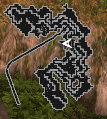 | 22 KB | I Know To Write | 1 | |
| 11:58, 30 October 2021 | BP Harlan.gif (file) |  |
10.08 MB | G00suede | 1 | |
| 15:02, 22 October 2021 | Hw hat vixen02.png (file) |  |
82 KB | Ikey | 1 | |
| 15:01, 22 October 2021 | Hw hat vixen01.png (file) | 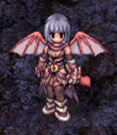 | 84 KB | Ikey | 1 | |
| 15:00, 22 October 2021 | Hw hat catwitch02.png (file) |  |
82 KB | Ikey | 1 | |
| 15:00, 22 October 2021 | Hw hat catwitch01.png (file) | 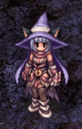 | 78 KB | Ikey | 1 | |
| 14:31, 22 October 2021 | Hw hat headphone02.png (file) | 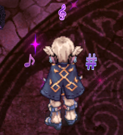 | 76 KB | Ikey | 1 | |
| 14:30, 22 October 2021 | Hw hat occult02.png (file) | 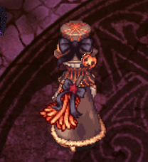 | 74 KB | Ikey | 1 | |
| 14:29, 22 October 2021 | Hw hat occult01.png (file) |  |
77 KB | Ikey | 1 | |
| 14:27, 22 October 2021 | Hw hat steampunk02.png (file) |  |
73 KB | Ikey | 1 | |
| 14:27, 22 October 2021 | Hw hat steampunk01.png (file) |  |
76 KB | Ikey | 1 | |
| 23:59, 20 October 2021 | Thanatos.png (file) |  |
47 KB | I Know To Write | 1 | |
| 18:03, 17 October 2021 | IB-explosion.gif (file) |  |
8.15 MB | Nithraniel | 1 | |
| 07:24, 17 October 2021 | TamilaThana.png (file) | 68 KB | Randomced859 | 1 | ||
| 07:23, 17 October 2021 | MiniRobeThana.png (file) | 68 KB | Randomced859 | 1 | ||
| 05:53, 17 October 2021 | Instancethanatostower.png (file) |  |
26 KB | Ara | 1 | |
| 03:35, 17 October 2021 | ThanatosElevatorNPC.png (file) | 24 KB | Randomced859 | 1 | ||
| 02:04, 12 October 2021 | Hw hat 07.png (file) |  |
95 KB | Kasama | 1 | |
| 05:24, 7 October 2021 | PET-LokiShadow.gif (file) | 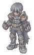 | 20 KB | Randomced859 | 1 | |
| 05:22, 7 October 2021 | War nut.gif (file) | 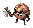 | 14 KB | Randomced859 | 1 | |
| 05:21, 7 October 2021 | MutatedKhalitzPet.png (file) |  |
6 KB | Randomced859 | 1 | |
| 05:20, 7 October 2021 | MutatedRaydricArcherPet.png (file) | 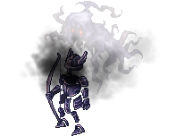 | 21 KB | Randomced859 | 1 | |
| 05:18, 7 October 2021 | MutatedRaydricPet.png (file) |  |
18 KB | Randomced859 | 1 | |
| 05:17, 7 October 2021 | BoneAcidusPet.png (file) |  |
4 KB | Randomced859 | 1 | |
| 05:15, 7 October 2021 | BoneFerusPet.png (file) | 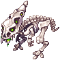 | 3 KB | Randomced859 | 1 | |
| 05:02, 7 October 2021 | NaghtSIegerPet.png (file) |  |
14 KB | Randomced859 | 1 | |
| 05:01, 7 October 2021 | BeelzebubPet.png (file) |  |
11 KB | Randomced859 | 1 | |
| 05:00, 7 October 2021 | BrokenThanaPet.png (file) |  |
33 KB | Randomced859 | 1 | |
| 04:58, 7 October 2021 | PaparePet.png (file) | 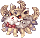 | 3 KB | Randomced859 | 1 | |
| 04:58, 7 October 2021 | ResentofThanaPet.png (file) | 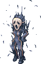 | 3 KB | Randomced859 | 1 | |
| 04:57, 7 October 2021 | AngerofThanaPet.png (file) |  |
5 KB | Randomced859 | 1 | |
| 04:56, 7 October 2021 | RegretofThanaPet.png (file) |  |
2 KB | Randomced859 | 1 | |
| 04:54, 7 October 2021 | HorrorofThanaPet.png (file) |  |
1 KB | Randomced859 | 1 | |
| 04:53, 7 October 2021 | CrowBaronPet.png (file) | 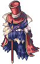 | 3 KB | Randomced859 | 1 | |
| 04:52, 7 October 2021 | CrowDukePet.png (file) |  |
3 KB | Randomced859 | 1 | |
| 04:51, 7 October 2021 | MutatedServantPet.png (file) | 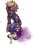 | 5 KB | Randomced859 | 1 | |
| 04:50, 7 October 2021 | OrcSkeletonPet.png (file) |  |
3 KB | Randomced859 | 1 | |
| 04:48, 7 October 2021 | OrcZombiePet.png (file) |  |
4 KB | Randomced859 | 1 | |
| 04:47, 7 October 2021 | DrainliarPet.png (file) | 2 KB | Randomced859 | 1 | ||
| 04:46, 7 October 2021 | MimicPet.png (file) | 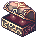 | 1,008 bytes | Randomced859 | 1 | |
| 03:31, 7 October 2021 | SprMOB-Deviling.gif (file) | 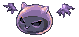 | 12 KB | Egg | 1 | |
| 03:29, 7 October 2021 | NIF Shady Imp01.png (file) |  |
31 KB | Egg | 1 | |
| 03:28, 7 October 2021 | SprNPC-BrownFurAdventurer.gif (file) | 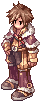 | 3 KB | Egg | 1 | |
| 03:28, 7 October 2021 | LOU Nobru.png (file) |  |
47 KB | Egg | 1 | |
| 03:27, 7 October 2021 | SprMOB-MiniDemon.gif (file) | 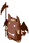 | 24 KB | Egg | 1 | |
| 03:27, 7 October 2021 | NIF Mischief Demon.png (file) |  |
31 KB | Egg | 1 | |
| 03:24, 7 October 2021 | EIN Bezz.png (file) |  |
7 KB | Egg | 1 | |
| 22:10, 4 October 2021 | Sally HW.PNG (file) | 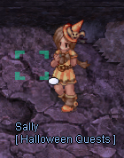 | 61 KB | Ikey | 1 |
{kind=link}
{kind=link}
{kind=link}
{kind=link}
{kind=link}
{kind=link}
{kind=link}
{kind=link}
{kind=link}
{kind=link}
{kind=link}
{kind=link}
{kind=link}
{kind=link}
{kind=link}
{kind=link}
{kind=link}
{kind=link}
{kind=link}
{kind=link}